【サカつく2026】★3はピックアップ確定のお得ガチャ!!Jリーグ百年構想リーグ得点王SP選手スカウトは引くべき？SP選手スカウト評価
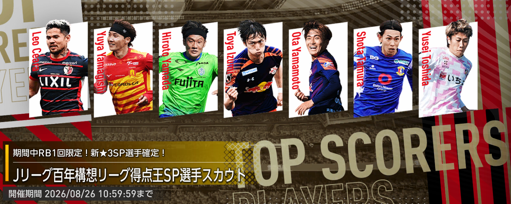
2026年8月12日より、「Jリーグ百年構想リーグ得点王SP選手スカウト」が開催されました。 今回はレオ・セアラ、山岸祐也、山田寛人、泉柊椰、山本桜大、田村翔太、土信田悠生の7名がピックアップ。 最大の特徴は、★3排出率が10.5％と高く、排出される★3がピックアップ7名に限定されていることです。 さらに3000RBの1回限定★3確定10連ガチャも、確定枠はピックアップ選手のいずれかとなります。
結論：ガチャ仕様はお得。ただし戦力価値は手持ち次第
今回のガチャは、★3確率10.5％かつ★3がピックアップ確定という点だけを見れば、非常に引きやすい仕様です。 1日1回限定の100RBシングルガチャを継続して引く選択は十分にアリでしょう。
一方、ラインナップ全体を見ると、ハーフアニバーサリーのペレや、6月の日本代表ガチャで登場した上田綺世、三笘薫などの 既存強力SPの互換候補という位置づけが多いのも事実です。 ペレや日本代表SPを十分に確保できているユーザーは、無理に深追いしなくても戦力的な損失は小さめです。
逆にペレ未所持ならレオ・セアラ、上田綺世未所持なら山岸祐也、三笘薫・中村敬斗未所持なら泉柊椰と、 手持ちの穴を埋められる選手が揃っています。今回の最高評価は、ポゼッションCFポストプレーヤーで最大総合力1位の土信田悠生（★★★★☆）です。 ガッツリ引く場合は、8月26日以降のガチャ情報を確認してから最終判断しても遅くありません。
Jリーグ百年構想リーグ得点王SP選手スカウトの注目ポイント
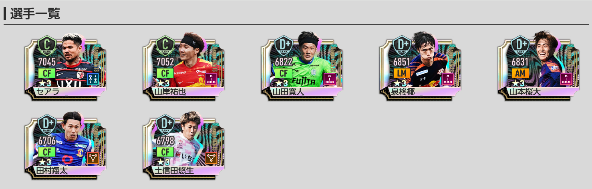
- 開催期間は2026年8月12日13時00分～8月26日10時59分。
- ★3選手の排出率は10.5％。
- 排出される★3選手はピックアップSP選手のみ。
- 3000RBの「1回限定★3確定10連ガチャ」は、確定枠もピックアップ確定。
- 開催終了後、今回のピックアップ対象選手はJリーグセレクトSP選手スカウトには追加されない。
- 期間終了後、「Jリーグ百年構想リーグ得点王SP選手スカウトメダル」は1枚につきエクストラコイン5枚へ変換。
★3を引いた時点で今回のピックアップ7名のいずれかが確定します。通常のSP選手スカウトのように、狙いとは異なる★3が大量に混ざる仕様ではないため、ピックアップ選手を狙う目的では分かりやすいガチャです。
ガチャ排出確率｜★3は10.5％・ピックアップ確定

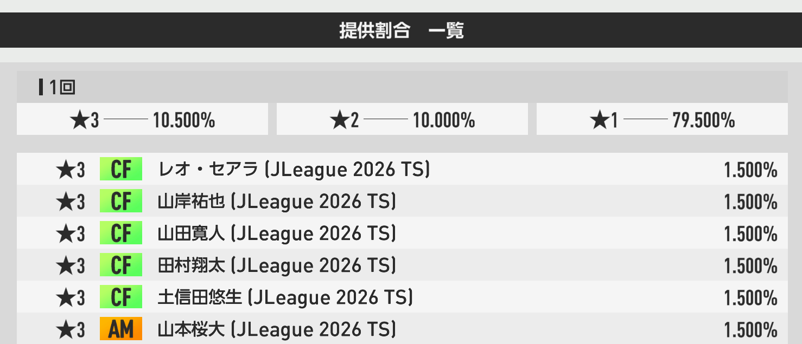

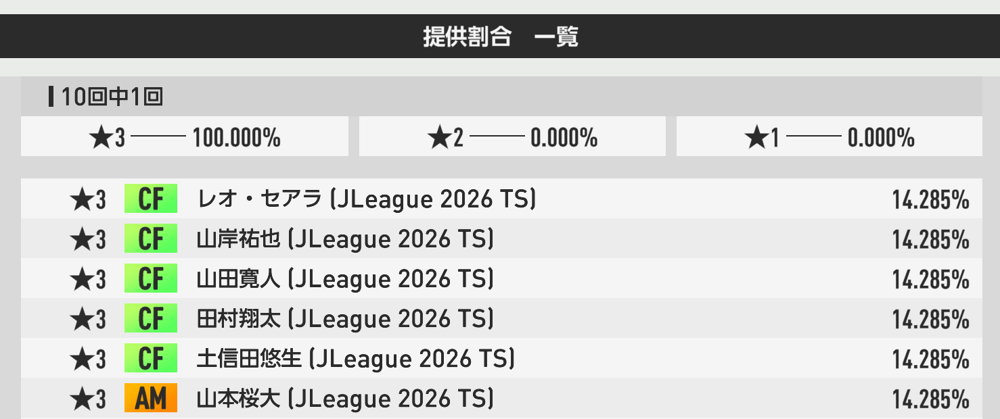
通常ガチャでは★3排出率が10.5％で、ピックアップ7名はそれぞれ1.5％。 7名合計で10.5％となるため、★3が出れば必ず今回のピックアップ選手です。
さらに3000RBの「1回限定★3確定10連ガチャ」は、確定枠もピックアップ対象。 欲しい選手が複数いるユーザーほど恩恵を受けやすい仕様です。
ガチャ仕様そのものはお得ですが、ピックアップ7名には既存強力SPと役割が近い選手も多く含まれます。排出率の高さだけで判断せず、自分の編成で本当に更新になる選手が何人いるかを確認してからRBを使うのがおすすめです。
ピックアップ7名のおすすめ度ランキング
今回は「単純な最大総合力」だけではなく、現在の金フォーメーションコンボとの相性、既存選手での代用可否、プレイスタイル内での順位、将来性まで含めて評価しています。
最も評価が高いのは土信田悠生。ポゼッションCFポストプレーヤーで最大総合力1位という明確な強みがあります。 次点の山田寛人はカウンターCFラインブレーカーで最大総合力1位。現状の金フォメコン適性は弱いものの、今後のフォメコン追加で評価が上がる余地があります。
ピックアップSP選手7名の性能評価
ここからは7選手を個別に評価します。最大総合力の順位は、全SP選手・同ポリシー・同ポジション・同プレイスタイルの4軸で表にまとめています。 「強い選手か」だけではなく、現在の手持ちで代用できるかまで確認してください。
P0405 / JLeague 2026 TS
レオ・セアラ
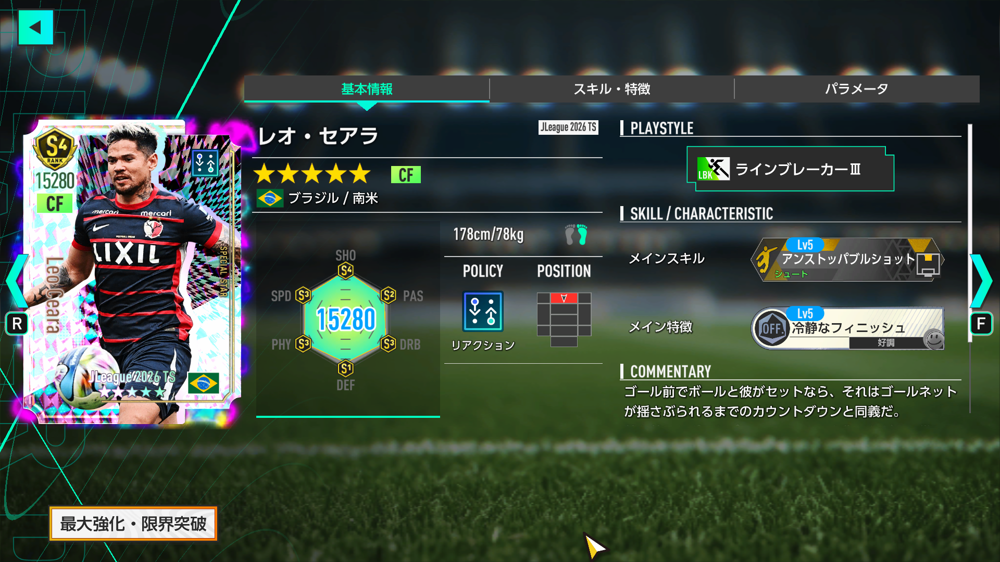
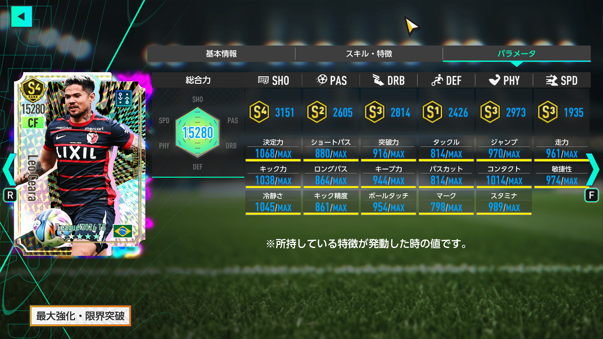
最大総合力ランキング
| 全SP選手 | 59位 / 411人 |
|---|---|
| リアクション | 19位 / 100人 |
| CF | 11位 / 82人 |
| ラインブレーカー | 4位 / 34人 |
リアクションのラインブレーカーⅢはペレに続いて2人目。ペレと同じブラジル国籍で、金フォーメーションコンボ「アルヴィネグロ・プライアーノ'11」「セレソン'70」の発動条件キー選手として採用できます。
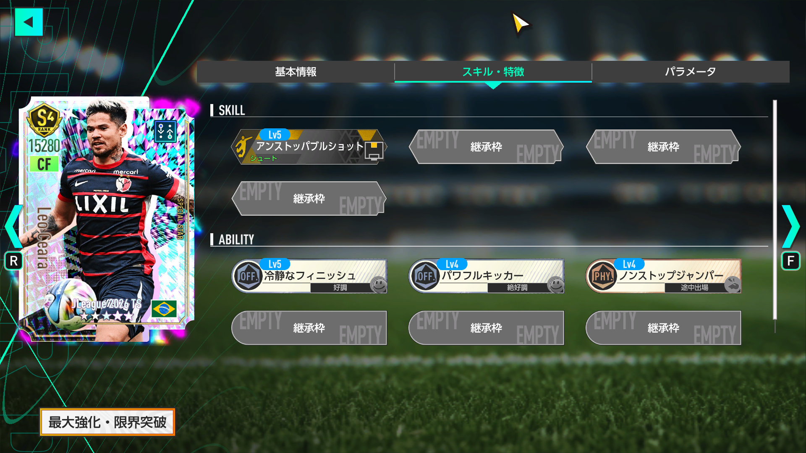
おすすめ度：★★☆☆☆
ペレと互換性のある性能を持つため、ペレ未所持で「セレソン'70」を採用したいなら優先度が上がります。一方、ペレを所持している場合は恒常★3SPのC・ロナウドやラウタロ・マルティネスの方が優秀な場面も多く、必須級とは言いにくい選手です。途中交代トリガーを1つ持つためペレの交代枠としての起用は面白いものの、ペレをフル出場させられる編成では出番が限られます。
P0406 / JLeague 2026 TS
山岸祐也
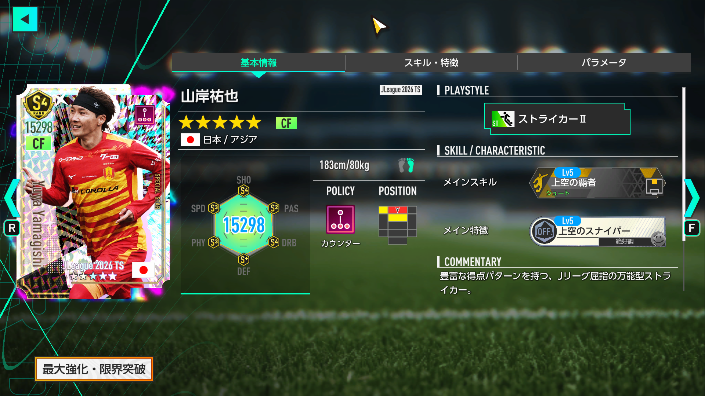
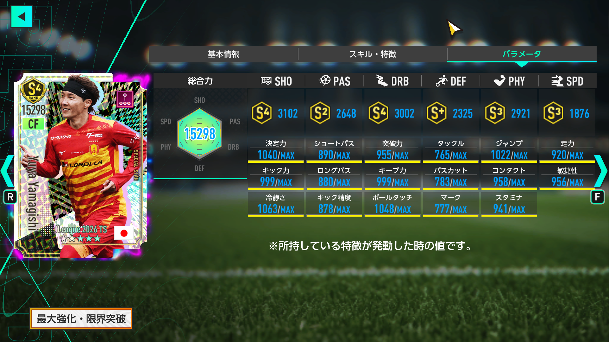
最大総合力ランキング
| 全SP選手 | 58位 / 411人 |
|---|---|
| カウンター | 19位 / 123人 |
| CF | 10位 / 82人 |
| ストライカー | 6位 / 25人 |
カウンターCFのストライカーでは24人目で、最大総合力は4位、日本人選手では2位。金フォーメーションコンボ「エウスカルドゥナク'12」の発動条件キー選手として採用できます。
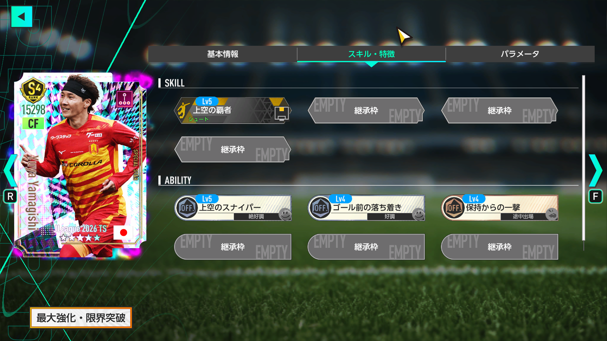
おすすめ度：★★☆☆☆
恒常SPのロベルト・レヴァンドフスキ、日本代表SPの上田綺世と役割が近く、特に上田綺世が未所持なら日本人CFとして価値があります。所持スキル「上空の覇者」を持つSP選手が山岸祐也のみという希少性も魅力。ただし、JリーグセレクトSP選手スカウトにも同構成・最大総合力14,458の山岸祐也が存在し、役割の代用候補は多めです。
P0407 / JLeague 2026 TS
山田寛人
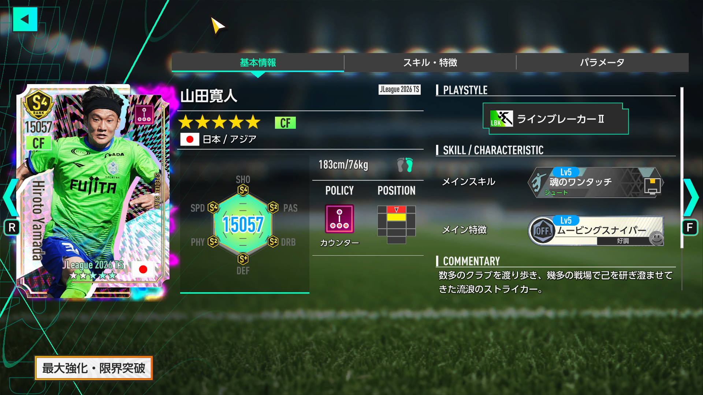
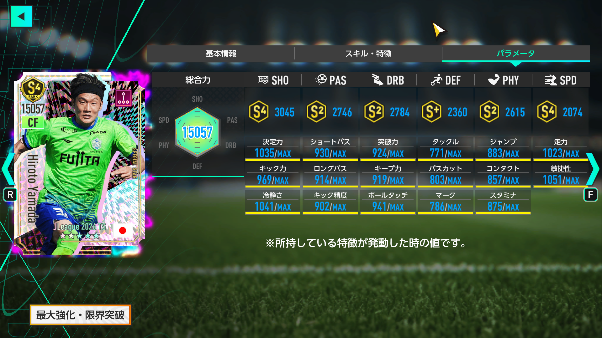
最大総合力ランキング
| 全SP選手 | 83位 / 411人 |
|---|---|
| カウンター | 28位 / 123人 |
| CF | 16位 / 82人 |
| ラインブレーカー | 6位 / 34人 |
カウンターCFのラインブレーカーでは7人目で、最大総合力は1位。現時点では金フォーメーションコンボの発動条件キー選手として採用できるものはありません。
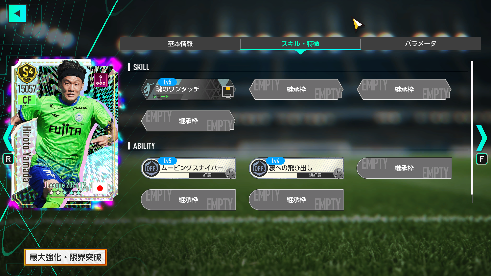
おすすめ度：★★★☆☆
「ブルー・インパクト'26」の1TOP、または「レ・ブルー'98」の2TOPを使っているなら候補になります。所持アビリティ2つ・継承枠3つという構成は評価を下げる要因ですが、カウンターCFラインブレーカーとしては最強格。将来ラインブレーカーⅡ指定の金フォメコンが実装されれば評価が一気に上がる可能性があります。ただしJリーグSPの新谷聖基、河村慶人、SP選手引換券のアンタンシェンでも役割は代用可能です。
P0408 / JLeague 2026 TS
泉柊椰
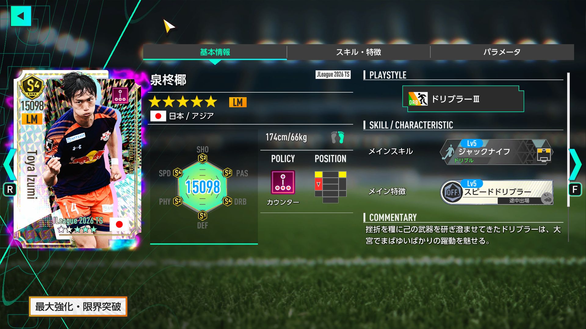
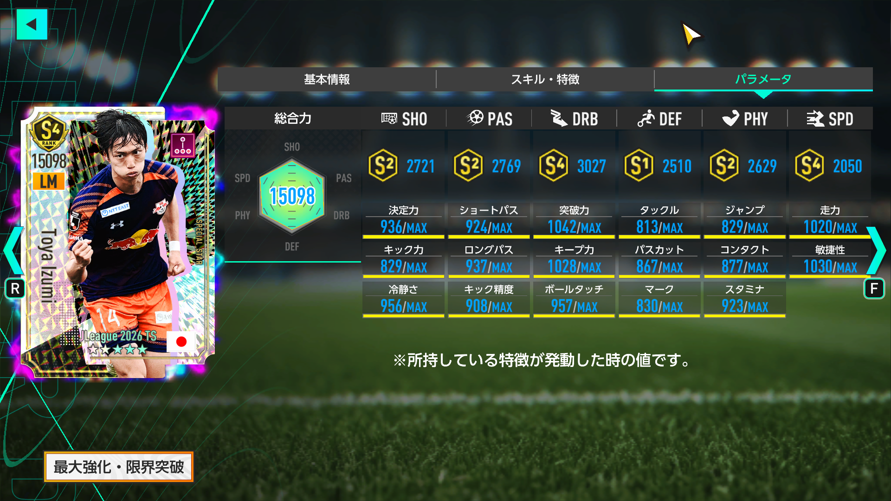
最大総合力ランキング
| 全SP選手 | 81位 / 411人 |
|---|---|
| カウンター | 26位 / 123人 |
| LM | 4位 / 17人 |
| ドリブラー | 12位 / 51人 |
カウンターLMのドリブラーⅢは3人目で、最大総合力は3位。上位には日本代表SPの三笘薫と中村敬斗がいます。金フォーメーションコンボ「ブルー・インパクト'26」の発動条件キー選手として採用可能です。
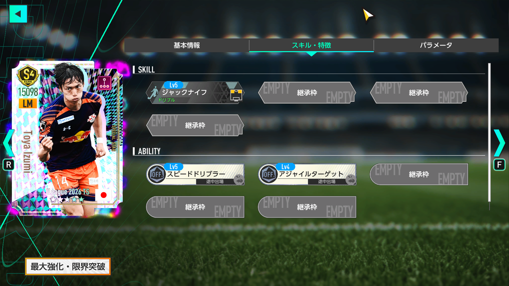
おすすめ度：★☆☆☆☆
三笘薫と中村敬斗が未所持なら獲得候補ですが、どちらかを所持している場合はスタメン起用の優先度が下がります。途中交代トリガーを2つ持つため「ブルー・インパクト'26」の交代枠としては面白い一方、カウンター金フォメコンでLMを起用できる編成自体が限られている点には注意が必要です。
P0409 / JLeague 2026 TS
山本桜大
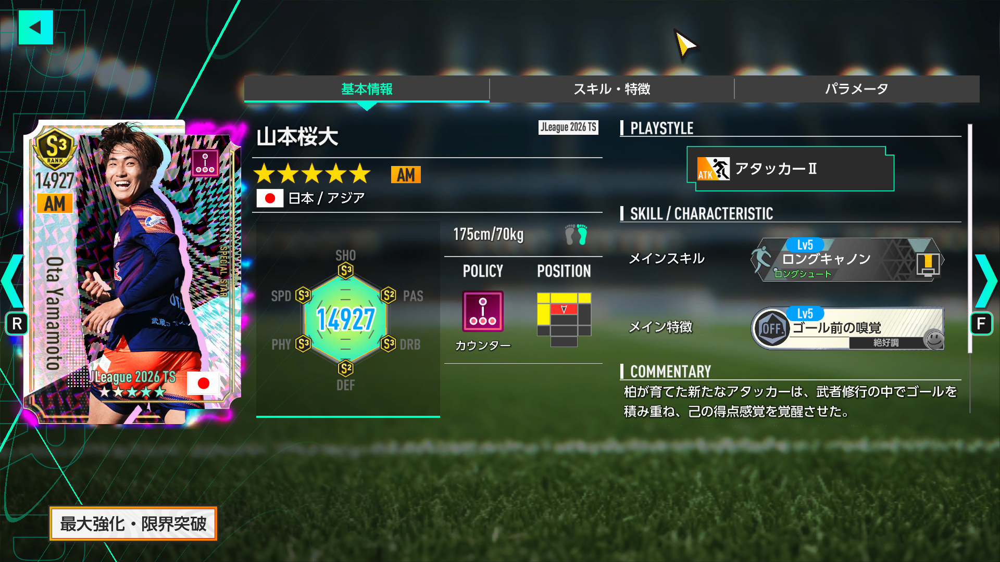
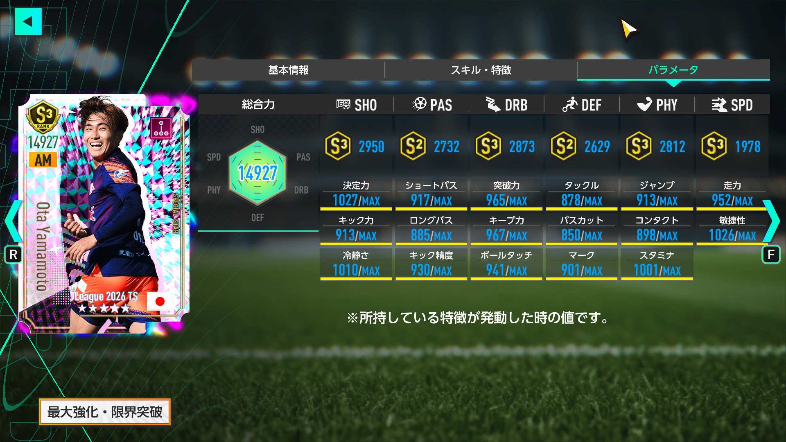
最大総合力ランキング
| 全SP選手 | 97位 / 411人 |
|---|---|
| カウンター | 32位 / 123人 |
| AM | 14位 / 53人 |
| アタッカー | 8位 / 35人 |
カウンターAMアタッカーでは10人目。最大総合力はジュード・ベリンガムに続く2位ですが、カウンターAM全体では15人中5位。金フォメコンではポリシー違いの「ソベラーノ'94」（ムービング）の発動条件キー選手として採用できます。
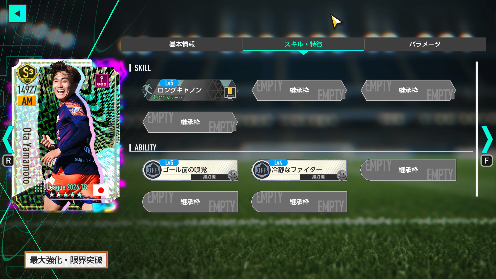
おすすめ度：★☆☆☆☆
ジュード・ベリンガムや恒常★3SPロドリゴ・ベンタンクールが未所持なら戦力候補です。ただし、アタッカーⅡが必要ならイベントSPの平塚狼馬でも代用可能で、途中交代トリガーもないため交代枠としての強みも控えめ。現在獲得可能なカウンターAMの中では上位なので、手持ちが不足しているユーザーには価値があります。
P0410 / JLeague 2026 TS
田村翔太
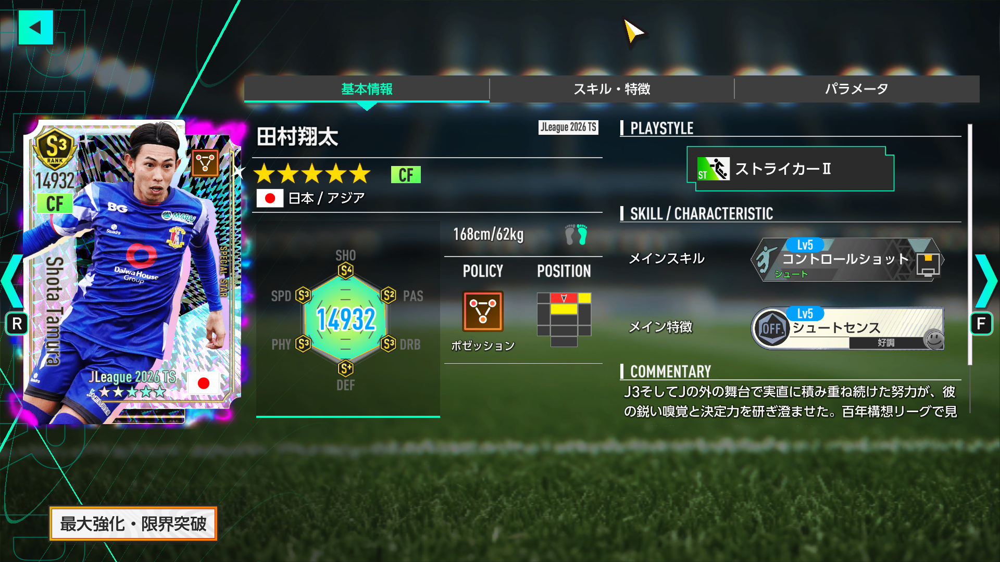
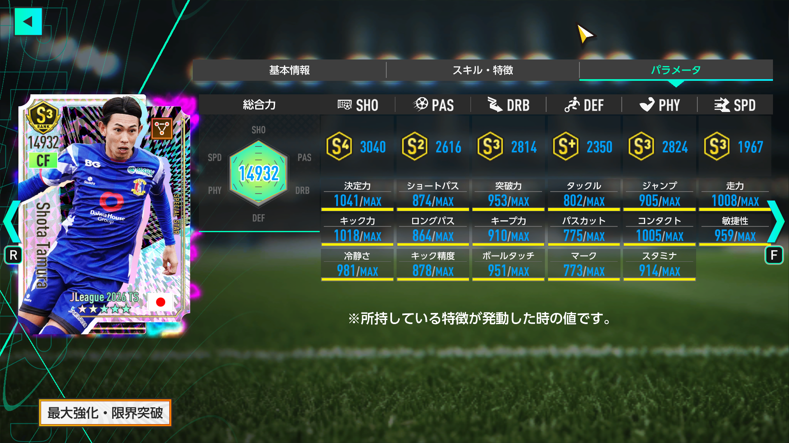
最大総合力ランキング
| 全SP選手 | 96位 / 411人 |
|---|---|
| ポゼッション | 20位 / 98人 |
| CF | 19位 / 82人 |
| ストライカー | 9位 / 25人 |
ポゼッションCFストライカーは4人目で、最大総合力はウスマン・デンベレに続く2位。ポゼッションCF全体では21人中5位で、4位には同じガチャの土信田悠生がいます。金フォメコン「ロス・カフェテロス'94」の発動条件キー選手として採用可能です。
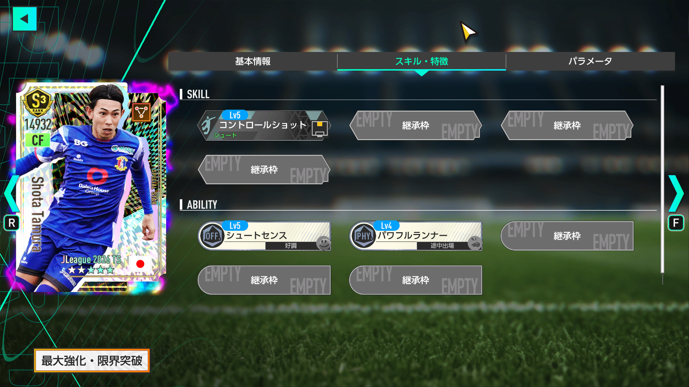
おすすめ度：★★☆☆☆
ウスマン・デンベレや恒常★3SPソン・フンミンが未所持なら候補。ただし同じガチャの土信田悠生の方が最大総合力は上で、「ロス・カフェテロス'94」を使うならデンベレ＋土信田の組み合わせが有力です。日本人ポゼッションCFストライカーとしては最大総合力トップなので、今後「ポゼッション」「日本人国籍」へのバフが入るイベントでは評価が上がる可能性があります。
P0411 / JLeague 2026 TS
土信田悠生
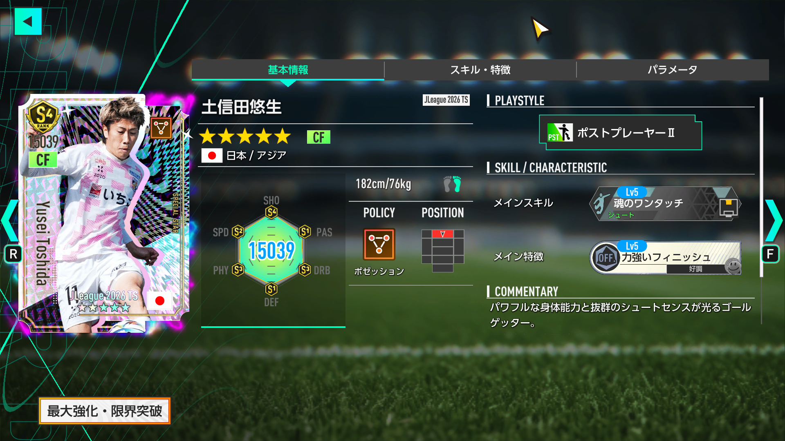
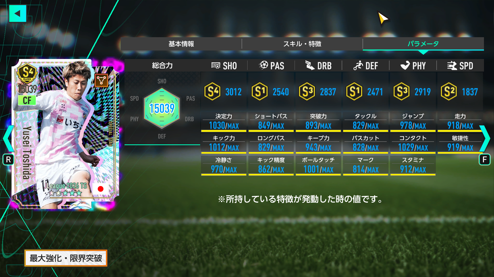
最大総合力ランキング
| 全SP選手 | 84位 / 411人 |
|---|---|
| ポゼッション | 17位 / 98人 |
| CF | 17位 / 82人 |
| ポストプレーヤー | 3位 / 23人 |
ポゼッションCFポストプレーヤーは6人目で、最大総合力は1位。現時点では金フォーメーションコンボの発動条件キー選手として採用できるものはありません。
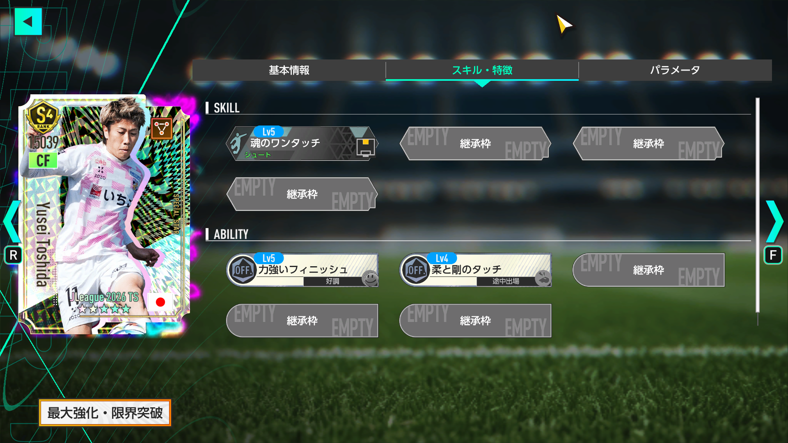
おすすめ度：★★★★☆
今回のピックアップ7名では最もおすすめ度が高い選手です。「ロス・カフェテロス'94」を使うなら優先的に獲得したい一方、同フォメコンはセントラルMFⅢが必須で、発動ハードルは高め。それでもポゼッションCFポストプレーヤーでは最大総合力1位、全ポリシーのCFポストプレーヤーでも3位と優秀で、将来の「ポゼッション」「日本人国籍」バフ環境でも伸びしろがあります。
このガチャを引くべき人・見送ってもよい人
引く価値が高い人
- ペレ未所持で「セレソン'70」を使いたい
- 上田綺世など、日本代表の強力CFを取り逃した
- 三笘薫・中村敬斗が未所持でカウンターLMを補強したい
- 「ロス・カフェテロス'94」を使い、土信田悠生を狙いたい
- Jリーグ・日本人SPを将来のイベント用に確保しておきたい
- 100RBのおはガチャを中心に低コストで狙いたい
見送ってもよい人
- ペレや日本代表SPなど、役割が近い上位選手を十分に確保済み
- 現在の主力フォメコンで今回の7名を起用する枠がない
- 今回のピックアップに複数の明確な当たりがいない
- 8月26日以降の新ガチャに向けてRBを温存したい
特に重要なのは、「★3確率10.5％だから引く」のではなく、「自分の編成で当たりが何人いるか」で判断することです。 7名のうち3～4名以上が戦力更新になるならガッツリ狙う価値が出ますが、実質1名狙いなら次回情報を待つ判断も有力です。
まとめ｜お得なガチャだが、最優先かどうかは手持ちで決まる
- ★3排出率は10.5％。
- ★3が出ればピックアップ7名のいずれかが確定。
- 3000RBの1回限定★3確定10連も、確定枠はピックアップ対象。
- 今回の最高評価は土信田悠生（★★★★☆）。
- ペレ未所持ならレオ・セアラの価値が上昇。
- 上田綺世、三笘薫などを取り逃しているユーザーにも補強候補あり。
- 既存の強力SPが揃っているなら、8月26日以降のガチャ情報待ちも有力。
「Jリーグ百年構想リーグ得点王SP選手スカウト」は、排出率だけを見ればかなり魅力的です。 しかし、ピックアップ選手の多くは既存の強力SPと役割が重なるため、全ユーザーにとって無条件で最優先というガチャではありません。
手持ちの穴をピンポイントで埋められる人にはお得、すでに最強クラスが揃っている人は温存も正解。 自分の主力フォーメーションと所持選手を確認したうえで判断しましょう。